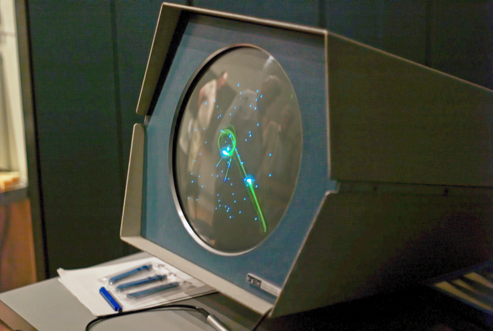

The Game awards
Postado 1 dezembro 2025 O primeiro homem a ganhar status de artista dos games foi o engenheiro americano Steve Russell, que em 1961 desenvolveu um jogo simples em um limitado (para os dias de hoje) computador. Outros programas de entretenimento vieram antes, mas Spacewar! foi o primeiro a ser distribuído comercialmente (ainda assim, pouquíssimos o experimentaram na época, já que computadores praticamente só existiam em universidades.

Russell levou 200 horas de trabalho para finalizar o projeto. Em Spacewar!, dois jogadores controlam naves espaciais com recursos limitados de munição e combustível. O jogo foi revisado até chegar à à versão final, em 1962. Pense nos rabiscos rudimentares nas paredes das cavernas e dá para entender por que essa é a pedra fundamental dos jogos: além de ter inspirado muitos títulos semelhantes, Spacewar! deu origem a uma nova indústria, que cresceria nos anos 70.
VoltarPostagens Recentes
Jaime Pádua, fundador e co-CEO da FURIA, celebrou a aparição de Danil "molodoy" Golubenko na lista de melhores do mundo da HLTV.
Leia maisA BLAST perguntou para jogadores dos principais times mundiais qual time é o mais carregado por somente um jogador. A grande maioria das respostas foi a Spirit por conta do nível de Danil "donk" Kryshkovets.
Leia mais